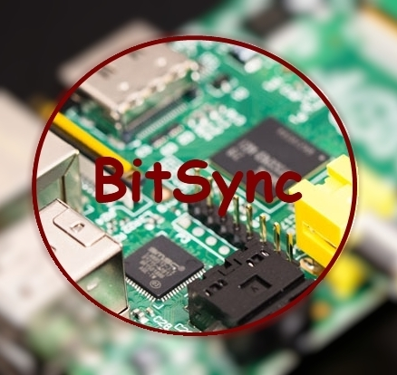
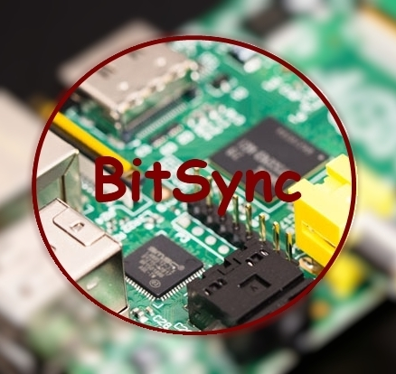

Добро пожаловать в {BitSync}, собственность andre_y_ru, под упровление Raspberry Pi (systems Debian). Система работает в постоянном режиме.
рассуждения на разные темы

Добро пожаловать в {BitSync}, собственность andre_y_ru, под упровление Raspberry Pi (systems Debian). Система работает в постоянном режиме.
пример:
secret key/ folder: BMWULWYUZCUCAS4ZY3BTN42ZDFE22P3Y4действующий:
secret key/ rpi-sync: BMWULWYUZCUCAS4ZY3BTN42ZDFE22P3Y4